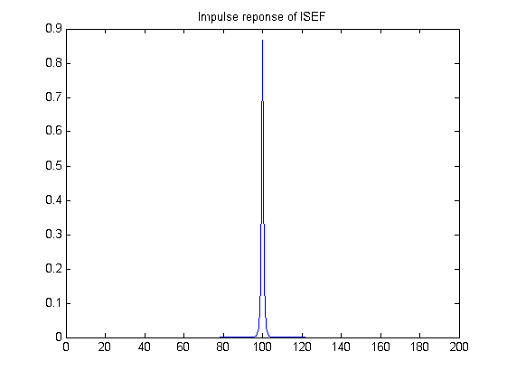
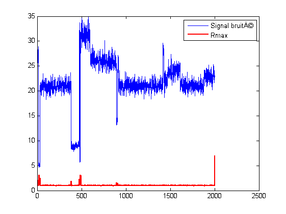

Contents
3ième Partie : Détection de ruptures sur une ligne d'image SAR
close all
clear all
clc
Génération du signal bruité par un bruit de scintillement multiplicatif
profondeur = 32
N = 2000
mu = 150
lambda = 1/mu
L = 500
ligne = genligne(lambda, N, profondeur);
subplot(3, 1, 1);
plot(ligne);
title('Ligne non bruit�');
bruit = gamrnd(L, 1/L, 1, N);
subplot(3, 1, 2);
plot(bruit)
title('Bruit de scintillement');
ligne_bruite = ligne .* bruit;
subplot(3, 1, 3);
plot(ligne_bruite);
title('Ligne bruit�');
figure;
profondeur =
32
N =
2000
mu =
150
lambda =
0.0067
L =
500


Génération du filre ISEF
muI = mean(ligne);
sigmaI = sqrt(var(ligne_bruite));
muR = muI;
sigmaR = (L*sigmaI^2 - muI^2) / (L + 1);
alpha = sqrt(((2*L*lambda) / (1 + (muR/sigmaR)^2)) + lambda^2);
C = alpha/2;
order = 199
ISEF = C * exp(-alpha*abs([-(order-1)/2:1:order/2]));
plot(ISEF);
title('Impulse reponse of ISEF');
ligne_debruite = filter(ISEF, 1, [ligne_bruite zeros(1, ceil(order/2))]);
ligne_debruite = ligne_debruite(1, ceil(order/2):end);
figure
plot(ligne_bruite, 'b');
hold on
plot(ligne_debruite, 'r');
title('Comparaison signal bruit� et signal débruité');
legend('Signal bruité', 'Signal débruité');
order =
199


Rapport des moyennes pondérées exponentiellement
ISEF1 = [ISEF(1, 1:ceil(order/2)) zeros(1, ceil(order/2))];
ISEF2 = [zeros(1, ceil(order/2)) ISEF(1, ceil(order/2):end)];
mu1 = abs(filter(ISEF1, 1, [ligne_debruite zeros(1, floor(order/2))]));
mu1 = mu1(1, floor(order/2):end);
mu2 = abs(filter(ISEF2, 1, [ligne_debruite zeros(1, floor(order/2))]));
mu2 = mu2(1, floor(order/2):end);
figure;
subplot(5, 1, 1);
plot(mu1);
title('mu1');
subplot(5, 1, 2);
plot(mu2);
title('mu2');
subplot(5, 1, 3);
plot(mu1./mu2);
title('mu1/mu2');
subplot(5, 1, 4);
plot(mu2./mu1);
title('mu2/mu1');
subplot(5, 1, 5);
rmax = max(mu1./mu2, mu2./mu1);
plot(rmax);
title('Rmax');
figure;
plot(ligne_bruite, 'b');
hold on;
plot(rmax, 'r', 'LineWidth', 1.5);
legend('Signal bruité', 'Rmax');
hold off


Détermination des transitions
seuil = 1.2
p = 0;
trans = [];
figure
plot(ligne, 'b', 'LineWidth', 1);
hold on
plot(rmax-2, 'r');
for i = 2:N-1;
if rmax(i-1)<rmax(i) && rmax(i)>rmax(i+1);
if rmax(i) > seuil;
p = p+1;
trans(p) = i-1;
x = [trans(p);trans(p)];
y = [min(ligne(i-2:i+2)), max(ligne(i-2:i+2))];
line(x, y, 'color','g', 'LineWidth', 2)
end
end
end
legend('Signal (avant bruitage)', 'Rmax', 'Transitions');
trans
seuil =
1.2000
trans =
Columns 1 through 6
17 32 383 475 482 488
Columns 7 through 9
892 907 1416